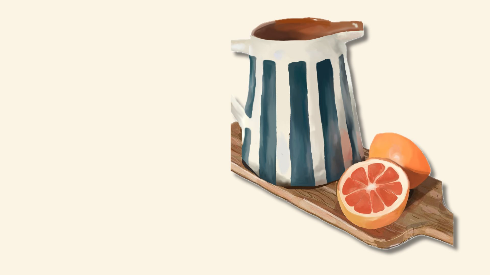

The
orange juice
I created a composition featuring a jar and sliced oranges placed on a wooden tray. My idea was to depicte the moment before making an orange juice. I used the brush tool to add shading and highlighting, bringing depth and realism to the objects. The jar was carefully shaded to capture the light effect, while the orange slices were detailed to showcase their texture and juiciness. The wooden tray was given a natural grainy texture to complement the scene, it took me 2 days to complete this digital art.